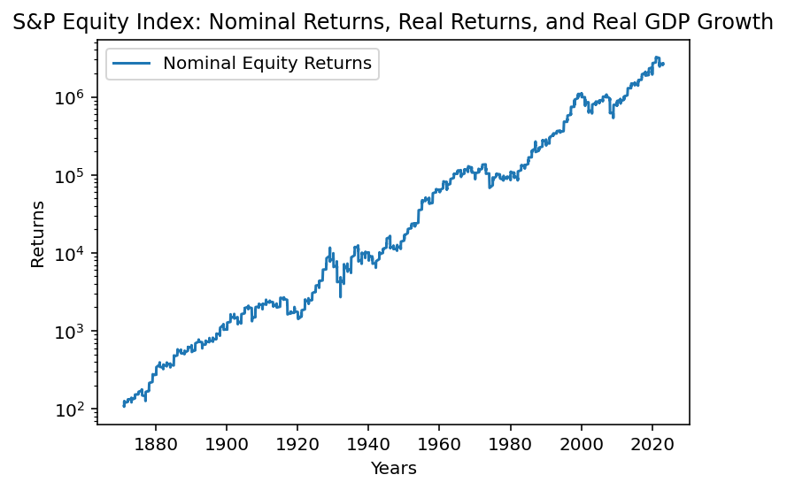

In this article, we will explore how to download Shiller’s Excel data on long-term stock market returns from his website using Python. We will use the requests library for HTTP requests and the pandas library for data manipulation. For visualization, we will use the Matplotlib library with the Pacoty stylesheet to create a chart comparing nominal equity returns, real equity returns, and real GDP growth.
Downloading Shiller’s Data
First, we need to import the required libraries and download the data using an HTTP request:
This code snippet downloads the Excel file from Shiller’s website and reads it into a pandas DataFrame.
Code
import requestsimport pandas as pdfrom io import BytesIOurl ="http://www.econ.yale.edu/~shiller/data/ie_data.xls"response = requests.get(url)# Check if the request was successfulif response.status_code ==200: data = pd.read_excel(BytesIO(response.content), sheet_name='Data', header=7)else:print("Failed to download the data")
Visualizing the Data with Matplotlib and Pacoty
Next, we will create a chart comparing the nominal equity returns, real equity returns, and real GDP growth using Matplotlib and the Pacoty stylesheet: python
Code
data
Date
P
D
E
CPI
Fraction
Rate GS10
Price
Dividend
Price.1
...
CAPE
Unnamed: 13
TR CAPE
Unnamed: 15
Yield
Returns
Returns.1
Real Return
Real Return.1
Returns.2
0
1871.01
4.44
0.26
0.4
12.464061
1871.041667
5.32
107.612654
6.301642
1.076127e+02
...
NaN
NaN
NaN
NaN
NaN
1.004177
1.000000
0.130609
0.092504
0.038106
1
1871.02
4.5
0.26
0.4
12.844641
1871.125000
5.323333
105.835283
6.114927
1.063449e+02
...
NaN
NaN
NaN
NaN
NaN
1.004180
0.974424
0.130858
0.094635
0.036224
2
1871.03
4.61
0.26
0.4
13.034972
1871.208333
5.326667
106.839235
6.025640
1.078582e+02
...
NaN
NaN
NaN
NaN
NaN
1.004183
0.964209
0.130951
0.096186
0.034765
3
1871.04
4.74
0.26
0.4
12.559226
1871.291667
5.33
114.013268
6.253892
1.156268e+02
...
NaN
NaN
NaN
NaN
NaN
1.004185
1.004919
0.122056
0.090972
0.031084
4
1871.05
4.86
0.26
0.4
12.273812
1871.375000
5.333333
119.618062
6.399320
1.218517e+02
...
NaN
NaN
NaN
NaN
NaN
1.004188
1.032591
0.122638
0.089488
0.033150
...
...
...
...
...
...
...
...
...
...
...
...
...
...
...
...
...
...
...
...
...
...
1824
2023.01
3960.6565
67.35
NaN
299.17
2023.041667
3.53
3999.346939
68.007921
2.604715e+06
...
28.334813
NaN
30.691634
NaN
0.026509
0.984746
41.286210
NaN
NaN
NaN
1825
2023.02
4079.684737
67.78
NaN
300.84
2023.125000
3.75
4096.669862
68.062191
2.671794e+06
...
28.977514
NaN
31.409746
NaN
0.023261
1.010600
40.430726
NaN
NaN
NaN
1826
2023.03
3968.55913
68.21
NaN
301.675
2023.208333
3.66
3974.051377
68.304399
2.595537e+06
...
28.063455
NaN
30.441826
NaN
0.025301
1.022361
40.746209
NaN
NaN
NaN
1827
2023.04
4100.6
NaN
NaN
302.0925
2023.291667
3.43
4100.600000
NaN
2.678188e+06
...
28.908607
NaN
31.337301
NaN
0.026808
NaN
41.599762
NaN
NaN
NaN
1828
NaN
Apr price is Apr 4th close
NaN
Dec Estimated
Mar/Apr CPI estimated
NaN
Apr GS10 is Apr 4th value
NaN
NaN
NaN
...
NaN
NaN
NaN
NaN
NaN
NaN
NaN
NaN
NaN
NaN
1829 rows × 22 columns
Code
import matplotlib.pyplot as pltimport numpy as np# Set the Pacoty stylesheet#plt.style.use('pacoty')# Create a figure and axisfig, ax = plt.subplots()# Extract the data we needyears = data['Date']nominal_returns = data['Price.1']#real_returns = data['Real S&P Equity Index']#gdp_growth = data['Real GDP Growth']# Plot the data on a logarithmic scaleax.semilogy(years, nominal_returns, label='Nominal Equity Returns')# Customize the chartax.set_xlabel('Years')ax.set_ylabel('Returns')ax.set_title('S&P Equity Index: Nominal Returns, Real Returns, and Real GDP Growth')ax.legend()# Show the chartplt.show()

This code snippet creates a chart with a logarithmic scale, comparing nominal equity returns, real equity returns, and real GDP growth over time.
Conclusion
The resulting chart demonstrates the power of compounded returns and the equity risk premium that has rewarded long-term shareholders. By using Python libraries like requests, pandas, and Matplotlib, we can easily download, process, and visualize financial data to better understand market trends and investment strategies.